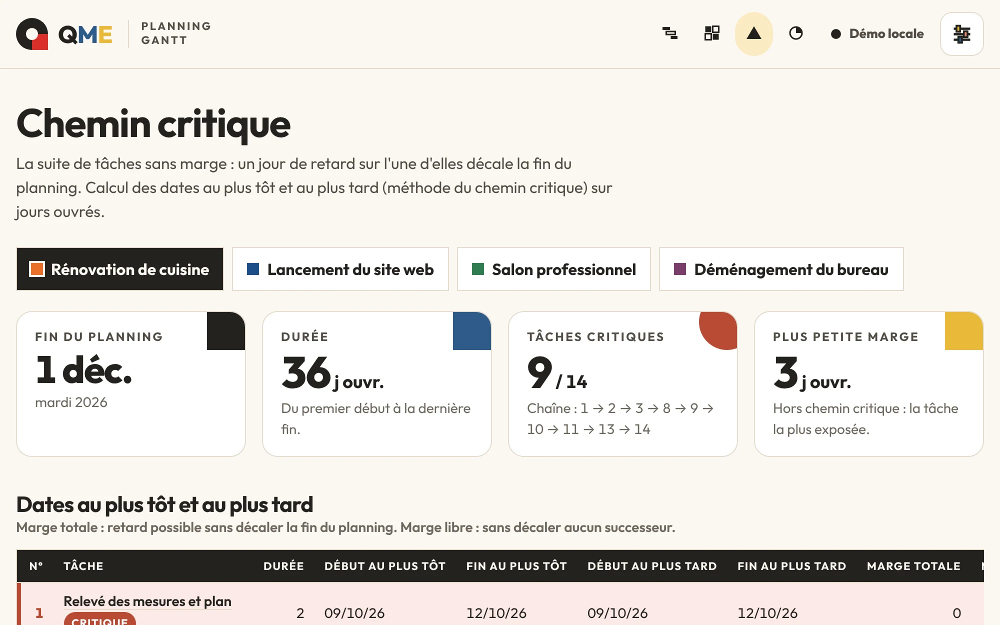

Méthode · planning
Laquelle de vos tâches décale tout ?
Sur un planning, une seule chaîne de tâches décide de votre date de fin.
Les autres ont de la marge.
Rénovation de cuisine · exemple fictif
Un retard, deux cas.
Dépose
Plomberie, électricité
Pose des meubles
Peinture du séjour
Plan de travail
Chemin critiqueMarge
Pose des meubles : +2 jours
Fin : +2 jours
Peinture du séjour : +2 jours
Fin : inchangée
C'est le chemin critique.
La suite de tâches liées la plus longue.
Un jour de retard dessus, un jour de retard à la livraison.
Savoir où regarder, c'est la moitié du pilotage.

Planning Gantt rapide · capture de la démo, données fictives
qm-engineering.fr